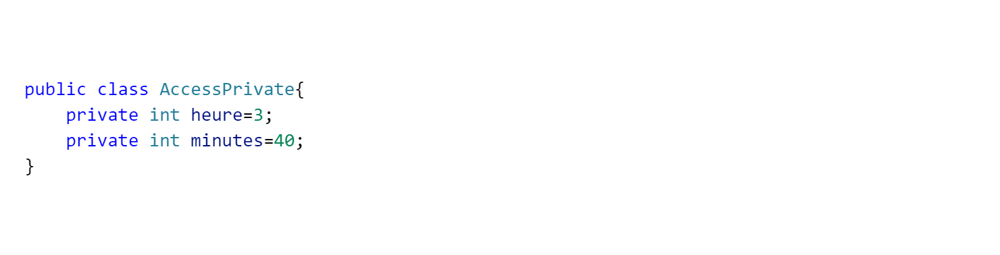
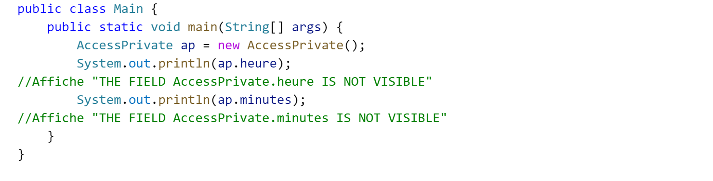

Le mots-clé private permet de declarer des attributs et des methodes qui ne seront visibles et accessibles directement que depuis l'interieur même de la classe. C'est à dire qu'il devient impossible de lire ou d'écrire la valeur d'un attribut privé directement en tapant le nom de lobjet suivit de point le nom de l'attribut ou de la methode.
EXEMPLE:


©CopyRight Dioukou Moussa Sissoko 2022 c++